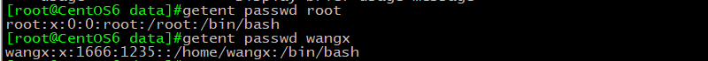
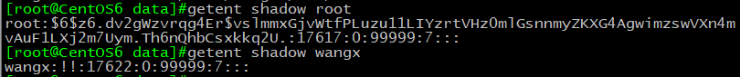
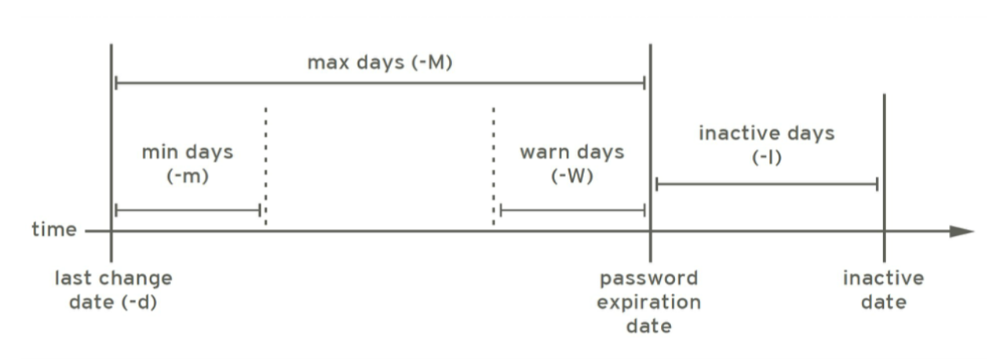
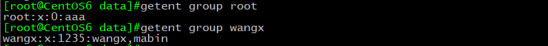
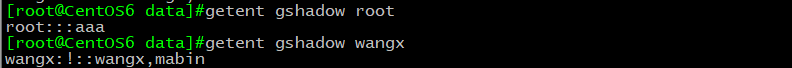

在linux系统上，用户管理是基于用户名和密码的方式进行资源的分配，了解和掌握用户与组的管理是从事运维工作所必须具备的能力，也是将来从事运维行业的重要工作之一。
Linux的安全模型
安全3A
Linux通过三个机制来保证用户的安全：
Authentication：认证
Authorization：授权
Accouting|Audition：审计
安全上下文
Linux 安全上下文
运行中的程序：进程 (process)
以进程发起者的身份运行：
root: /bin/cat
mage: /bin/cat
进程所能够访问资源的权限取决于进程的运行者的身份
User and Grooup
用户user
令牌: token,identity
Linux 用户：Username/UID
管理员：root, 0
普通用户：1-65535
系统用户：1-499, 1-999 （CentOS7） ）
对守护进程获取资源进行权限分配
登录用户:500+, 1000+ （CentOS7） ）
交互式登录
组 group：
Linux组：Groupname/GID
管理员组：root，GID=0
普通组：
系统组：1-499,1-999（centos7）
普通组：500+，1000+（centos7）
在创建用户不指定组的情况下，默认创建一个与该用户名相同的组作为该用户的主组
组的类别：
用户的主要组(primary group)
用户必须属于一个且只有一个主组
组名同用户名，且仅包含一个用户，私有组
用户的附加组(supplementary group)
一个用户可以属于零个或多个辅助组
用户和组的配置文件
- /etc/passwd： 存用户及其属性信息( 名称、UID 、主组ID 等
- /etc/shadow： 存放用户密码及其相关信息
- /etc/group： 存放组及属性信息
- /etc/gshadow： 存放组密码及其相关信息
- /etc/default/useradd：新建账户模板信息
/etc/passwd

1 | name：password:UID:GID:GECEO:directory:shell |
/etc/shadow

1 | 1. 登录用名 |

/etc/group

1 | 1. group_name:password:GID:user_list |
/etc/gshadow

1 | 1. group_name:encrypted_password:administrators:members |
/etc/default/useradd
1 | 1. useradd defaults file 创建用户默认文件 |
文件操作
vipw 等同于vi /etc/passwd
vigr 等同于vi /etc/group
pwck 检查passwd文件格式错误
grpck 检查group文件格式错误
用户与组的管理命令
用户管理命令及常用选项
useradd: 添加登录账号
1
2
3
4
5
6
7
8
9
10
11
12-u 指定uid（生产环境中多台服务器保证程序是同一UID）
-o 不检查UID的唯一性，需配合-u使用（不建议UID一样）
-g 创建用户时指定主组
-c 创建用户时添加描述
-d 创建用户时指定家目录路径，二层目录（生产环境中创建给服务用的账户可能会用到）
-s 创建用户时指定shell类型/etc/shells
-r 创建系统用户（默认不创建家目录）
-m 强行创建家目录，用于系统用户，配合-r使用（生产环境中为服务生成系统用户）
-M 强行不创建家目录，用于普通用户
-G 创建用户时加入到多个辅助组里，多个辅助组用“，”分开
-N 创建一个用户名和主组名不同的用户，默认users作为主组
-p 创建用户添加密码（不建议此种方式添加口令，口令会在shadow文件中明文）usermod： 修改登录账号
1
2
3
4
5
6
7
8
9-u 修改UID
-g 修改GID（组需存在）
-G 修改辅助组（会将原来的辅助组覆盖），如果要保留原辅助组配合-a使用
-s 新的默认shell
-c 新的注释信息
-d 新家目录不会自动创建；若要创建新家目录并移动原家数据，同时使用-m选项（-m -d有顺序）
-l 新的用户名
-L 用户加锁
-U 用户解锁（centos6以后禁止此方式解锁）userdel： 删除登录账号
1
-r 删除用户的所有文件，家目录及邮箱（工作中不建议用，建议保留数据）
id： 可以显示真实有效的UID和GID
1
2
3
4-u: 显示UID
-g: 显示GID
-G: 显示用户所属的组的ID
-n: 显示名称，需配合ugG 使用su: 切换用户或以其他用户身份执行命令
1
2
3
4
5
6
7示例：
su UserName ：非登录式切换，即不会读取目标用户的配置文件，不改变当前工作目录
su - UserName ：登录式切换，会读取目标用户的配置文件，切换至家目录，完全切换
root su 至其他用户无须密码；非root 用户切换时需要密码换个身份执行命令：
su [-] UserName -c 'COMMAND'
选项：-l --login
su -l UserName 于 相当于 su - UserNamepasswd: 修改自己的密码
1
2
3
4
5
6
7
8
9
10passwd [OPTIONS] UserName: 修改指定用户的密码，仅root
-l: 锁定指定用户
-u: 解锁指定用户
-e: 强制用户下次登录修改密码
-n mindays: 指定最短使用期限
-x maxdays ： 最大使用期限
-w warndays ： 提前多少天开始警告
-i inactivedays ： 非活动期限
--stdin ： 从标准输入接收用户密码
如： echo " PASSWORD " | passwd --stdin USERNAMEnewusers passwd： 格式文件 批量创建用户
chpasswd： 批量修改用户口令chage：修改用户密码策略
1
2
3
4
5
6
7
8
9
10
11-d LAST_DAY
-E --expiredate EXPIRE_DATE
-I --inactive INACTIVE
-m --mindays MIN_DAYS
-M --maxdays MAX_DAYS
-W --warndays WARN_DAYS
–l 显示
示例：
chage -d 0 tom 下一次登录强制重设密码
chage -m 0 –M 42 –W 14 –I 7 tom
chage -E 2016-09-10 tomchfn: 用来改变finger命令显示的信息
1
2
3
4-f<真实姓名>或--full-name<真实姓名>：设置真实姓名；
-h<家中电话>或--home-phone<家中电话>：设置家中的电话号码；
-o<办公地址>或--office<办公地址>：设置办公室的地址；
-p<办公电话>或--office-phone<办公电话>：设置办公室的电话号码；chsh: 修改指定shell
1
2-s<shell 名称>或--shell<shell 名称>：更改系统预设的shell环境。；
-l或--list-shells：列出目前系统可用的shell清单；finger: 用于查找并显示用户信息。包括本地与远端主机的用户皆可
1
2
3
4
5
6
7-l：列出该用户的帐号名称，真实姓名，用户专属目录，登入所用的Shell，登入时间，转信地址，电子邮件状，还有计划文件和方案文件内容；
-m：排除查找用户的真实姓名；
-s：列出该用户的帐号名称，真实姓名，登入终端机，闲置时间，登入时间以及地址和电话；
-p：列出该用户的帐号名称，真实姓名，用户专属目录，登入所用的Shell，登入时间，转信地址，电子邮件状，但不显示该用户的计划文件和方案文件内容。
组帐号维护命令及常用选项
groupadd： 添加组
1
2-g 指明GID号创建组
-r 创建系统组group（centos6：ID<500、centos7：ID<1000）groupmod： 修改组信息
1
2-n 新的组名
-g 新的GIDgroupdel： 删除组（前提没有用户以此组为主组）
groupmems： 查看指定组的成员
1
2
3
4
5-g 更改为指定组（只有root）
-a 指定用户加入组
-d 从组中删除用户
-p 从组中清除所有成员
-l 显示组成员列表（读取的/etc/group文件中对应组的最后一个字段的全部内容）gpasswd： 给组添加口令
1
2
3-a user 将user添加至指定组中
-d user 从指定组中移除用户user
-A user1，user2… 设置有管理权限的用户列表（设置组管理员）